Methylation at compartment boundaries (Fig 5F,G, S26C/D)#
Part of the Fig. 5 chapter — see it for the panel-by-panel map. The first code cell sets ENTEX_ROOT and activates the no-overwrite guard (see the Reproduction guide). Outputs shown are the author’s original run.
📥 Required input files#
This notebook reads the following files (paths resolve from ENTEX_ROOT/REF_ROOT; the setup cell sets them). See the chapter’s inputs.md for RAW-vs-derived tags.
f'{indir}L1color.tsv'· metadata: colorf'{indir}merged_allc/subtype1k.mcds'· sc/pseudobulk mC (allc)'mCG_distribution/L1_chrom5k_mCG.hdf'· other'compartment/L1/comp.impute.qnorm.hdf'· compartment'domain/L1_impute.boundary.h5ad'· domain/boundary'domain/domain_impute_compbound.joblib'· domain/boundary'domain/domain_impute_compbound_flankmcg.joblib'· domain/boundary'mCH_distribution/L1_chrom5k_mCH.hdf'· other'domain/domain_impute_compbound_flankmch.joblib'· domain/boundary
# === Reproduction setup — edit ENTEX_ROOT / REF_ROOT for your machine ===
import os, sys
ENTEX_ROOT = os.environ.get('ENTEX_ROOT', '/large_storage/zhoulab/zhoujt/project/ENTEx')
REF_ROOT = os.environ.get('REF_ROOT', '/large_storage/zhoulab/ref')
BOOK_ROOT = os.environ.get('BOOK_ROOT', f'{ENTEX_ROOT}/analysis/HumanCellEpigenomeAtlas')
sys.path.insert(0, BOOK_ROOT)
os.chdir(f'{ENTEX_ROOT}/analysis') # original working directory
import repro_guard # no-overwrite guard (default: skip existing)
import numpy as np
import pandas as pd
import seaborn as sns
import matplotlib as mpl
import matplotlib.pyplot as plt
from glob import glob
from scipy.stats import pearsonr
from concurrent.futures import ProcessPoolExecutor, as_completed
import joblib
import anndata
import scanpy as sc
import scanpy.external as sce
from sklearn.preprocessing import normalize
from sklearn.metrics import pairwise_distances, roc_auc_score
from ALLCools.mcds import MCDS
import cooler
mpl.style.use('default')
mpl.rcParams['pdf.fonttype'] = 42
mpl.rcParams['ps.fonttype'] = 42
mpl.rcParams['font.family'] = 'sans-serif'
mpl.rcParams['font.sans-serif'] = 'Helvetica'
import warnings
warnings.filterwarnings("ignore")
indir = f'{ENTEX_ROOT}/'
chrom_size_path = '/large_experiments/zhoulab/ref/hg38/fasta/hg38.main.chrom.sizes'
chrom_sizes = cooler.read_chromsizes(chrom_size_path, all_names=True)
chrom_sizes = chrom_sizes.iloc[:22]
L1_meta = pd.read_csv(f'{indir}L1color.tsv', sep='\t', header=0, index_col=0)
L1_meta = L1_meta.drop(['c35', 'c36'], axis=0)
L1_annot = L1_meta['L1_abbr'].to_dict()
L1_color = L1_meta['color'].to_dict()
L1_color.update({L1_annot[k]: L1_color[k] for k in L1_annot if k in L1_color}) # also key by name
Get mCG level#
mcds = MCDS.open(f'{indir}merged_allc/subtype1k.mcds', var_dim='chrom1k')
mcds
bin_df = mcds[['chrom1k_chrom', 'chrom1k_start', 'chrom1k_end']].to_pandas()
bin_df['chrom5k'] = bin_df['chrom1k_chrom'].astype(str) + '_' + (bin_df['chrom1k_start'] // 5000).astype(str)
bin_df
mcds = mcds.assign_coords(L1=('cell', mcds.get_index('cell').str.split('-').str[0]))
mcds = mcds.groupby('L1').sum()
# mcds = mcds.assign_coords(chrom10k=('chrom1k', bin_df['chrom1k']))
mcds = mcds.sel({'mc_type':'CGN'})
mcds = MCDS(mcds, obs_dim='L1', var_dim='chrom1k')
mcds
exclude_chromosome = ['chrX', 'chrY', 'chrM', 'chrL']
mcds = mcds.remove_chromosome(exclude_chromosome)
cov = mcds['chrom1k_da'].sel(count_type='cov').mean(dim='L1').squeeze().to_pandas()
mcds = mcds.sel({'chrom1k':cov.index[cov>50]})
black_list_path = '/large_experiments/zhoulab/ref/blacklist/hg38-blacklist.v2.bed.gz'
# --- robust black-list removal (inline replacement) ---
# MCDS.remove_black_list_region intersects with pybedtools and calls
# .to_dataframe().set_index(['chrom','start','end']). In pybedtools>=0.12 an
# EMPTY intersect returns a column-less DataFrame, so set_index raises
# KeyError("None of ['chrom','start','end'] ...") instead of the caught
# EmptyDataError. Reproduce the same result robustly by building the feature
# bed from the mcds bin coords and dropping bins overlapping the black list.
import pybedtools as _pbt
_feat = mcds.get_feature_bed(var_dim='chrom1k').reset_index()
_feat.columns = ['chrom1k', 'chrom', 'start', 'end']
_black = _pbt.BedTool.from_dataframe(
_feat[['chrom', 'start', 'end', 'chrom1k']]
).intersect(_pbt.BedTool(black_list_path), f=0.5, wa=True).to_dataframe()
if _black.shape[1] >= 4:
_drop = set(_black.iloc[:, 3].astype(str))
_keep = [b for b in mcds.get_index('chrom1k') if str(b) not in _drop]
mcds = mcds.sel({'chrom1k': _keep})
print(f'{len(_drop)} chrom1k features removed due to overlapping black list regions.')
else:
print('No feature overlapping the black list bed file.')
mc = mcds.sel({'count_type':'mc'})['chrom1k_da'].to_pandas()
cov = mcds.sel({'count_type':'cov'})['chrom1k_da'].to_pandas()
bin_df = bin_df.loc[mc.columns]
mc = mc.T.groupby(bin_df['chrom5k']).sum()
cov = cov.T.groupby(bin_df['chrom5k']).sum()
from ALLCools.mcds.utilities import calculate_posterior_mc_frac
mcg = calculate_posterior_mc_frac(mc.T.values, cov.T.values, normalize_per_cell=False)
mcg = pd.DataFrame(mcg, index=mc.columns, columns=mc.index)
mcg.to_hdf('mCG_distribution/L1_chrom5k_mCG.hdf', key='data')
mcg = pd.read_hdf('mCG_distribution/L1_chrom5k_mCG.hdf', key='data')
bin_df = pd.DataFrame(index=mcg.columns)
bin_df['chrom'] = bin_df.index.str.split('_').str[0]
bin_df['start'] = bin_df.index.str.split('_').str[1].astype(int) * 5000
bin_df
comp = pd.read_hdf('compartment/L1/comp.impute.qnorm.hdf', key='data')
comp.index = comp['chrom'].astype(str) + '_' + (comp['start'] // 100000).astype(str)
adata = anndata.read_h5ad('domain/L1_impute.boundary.h5ad')
bin_domain = adata.var.copy()
bin_domain.index = bin_domain.index.astype(int)
chrom_offset = {c: bin_domain[bin_domain['chrom'] == c].index[0] for c in chrom_sizes.index}
def category_boundary(ct):
# domaintmp = adata.X.indices[adata.X.indptr[i]:adata.X.indptr[i+1]]
domaintmp = adata[ct].X.indices
chrom = bin_domain.loc[domaintmp, 'chrom'].values
group_domain_tmp = {'ab':{}, 'ba':{}, 'other':{}}
for c,comp_ct_chrom in comp.groupby('chrom')[ct]:
bound_ct_chrom = domaintmp[chrom==c] - chrom_offset[c]
## filter nearby boundaries
diff = np.abs(np.diff(bound_ct_chrom))
boundfilter = np.ones(len(bound_ct_chrom)).astype(bool)
boundfilter[1:] = np.logical_and(boundfilter[1:], diff>10)
boundfilter[:-1] = np.logical_and(boundfilter[:-1], diff>10)
bound_ct_chrom = bound_ct_chrom[boundfilter] * 25000
## filter compartment swith boundary
mid = bound_ct_chrom // 100000
l, r = mid - 5, mid + 5
binfilter = np.logical_and(l>=0, r<=comp_ct_chrom.shape[0])
bound_ct_chrom = bound_ct_chrom[binfilter]
bound_roc = np.array([roc_auc_score(label, comp_ct_chrom.values[ll:rr])
for ll,rr in zip(l[binfilter], r[binfilter])])
group_domain_tmp['ab'][c] = bound_ct_chrom[bound_roc <= 0.1]
group_domain_tmp['ba'][c] = bound_ct_chrom[bound_roc >= 0.9]
group_domain_tmp['other'][c] = bound_ct_chrom[np.logical_and(bound_roc > 0.1, bound_roc < 0.9)]
return group_domain_tmp
from concurrent.futures import ProcessPoolExecutor, as_completed
cpu = 20
label = np.repeat([0,1], 5)
with ProcessPoolExecutor(cpu) as executor:
futures = {}
for ct in L1_meta.index:
future = executor.submit(
category_boundary,
ct=ct,
)
futures[future] = ct
domain = {}
for future in as_completed(futures):
ct = futures[future]
domain[ct] = future.result()
print(f'{ct} finished')
joblib.dump(domain, 'domain/domain_impute_compbound.joblib', compress=5)
domain = joblib.load('domain/domain_impute_compbound.joblib')
def bound_flank_mcg(ct):
mcg_ct = mcg.loc[ct].groupby(bin_df['chrom'])
bound_data = {'ab':[], 'ba':[], 'other':[]}
for c,mcg_ct_chrom in mcg_ct:
idx = mcg_ct_chrom.index.str.split('_').str[1].astype(int) * 5000
for key in ['ab', 'ba', 'other']:
tmp = np.zeros((len(domain[ct][key][c]), 100))
for i,xx in enumerate(domain[ct][key][c]):
lbin = (idx >= (xx - 250000)) & (idx < xx)
rbin = (idx < (xx + 250000)) & (idx >= xx)
selb = lbin | rbin
mcg_tmp = mcg_ct_chrom[selb]
idxtmp = idx[selb]
tmp[i] = mcg_tmp.mean()
tmp[i, (idxtmp-xx)//10000 + 50] = mcg_tmp.values
bound_data[key].append(tmp)
for key in ['ab', 'ba', 'other']:
bound_data[key] = np.concatenate(bound_data[key], axis=0)
return bound_data
ave_data = {'ab':[], 'ba':[], 'other':[]}
for ct in L1_meta.index:
mcg_ct = mcg.loc[ct].groupby(bin_df['chrom'])
bound_data = {'ab':[], 'ba':[], 'other':[]}
for c,mcg_ct_chrom in mcg_ct:
idx = mcg_ct_chrom.index.str.split('_').str[1].astype(int) * 5000
for key in ['ab', 'ba', 'other']:
tmp = np.zeros((len(domain[ct][key][c]), 100))
for i,xx in enumerate(domain[ct][key][c]):
lbin = (idx >= (xx - 250000)) & (idx < xx)
rbin = (idx < (xx + 250000)) & (idx >= xx)
selb = lbin | rbin
mcg_tmp = mcg_ct_chrom[selb]
idxtmp = idx[selb]
tmp[i] = mcg_tmp.mean()
tmp[i, (idxtmp-xx)//5000 + 50] = mcg_tmp.values
bound_data[key].append(tmp)
for key in ['ab', 'ba', 'other']:
bound_data[key] = np.concatenate(bound_data[key], axis=0)
ave_data[key].append(bound_data[key].mean(axis=0))
print(ct)
# fig, axes = plt.subplots(1, 3, figsize=(9, 3), dpi=300)
# fig.suptitle(L1annot[ct], fontsize=12)
# for i,key in enumerate(['ab', 'ba', 'other']):
# ax = axes[i]
# data = bound_data[key].copy()
# idx = np.argsort(data[:, :50].mean(axis=1) - data[:, 50:].mean(axis=1))
# data = data[idx]
# vmin, vmax = np.percentile(data, [5, 98])
# ax.imshow(data, cmap='Greens_r', aspect='auto', vmin=vmin, vmax=vmax)
# ax.set_xticks([-0.5, 49.5, 99.5])
# ax.set_yticks([])
# ax.set_xticklabels(['-500k', ['A>B','B>A','Others'][i], '+500k'])
# ax.set_ylabel(f'{data.shape[0]} Compartment Boundaries')
joblib.dump(ave_data, 'domain/domain_impute_compbound_flankmcg.joblib', compress=5)
ave_data = joblib.load('domain/domain_impute_compbound_flankmcg.joblib')
data = pd.concat([pd.DataFrame(ave_data[key], index=L1_meta.index) for key in ['ab', 'ba', 'other']], axis=1)
rorder = cg.dendrogram_row.reordered_ind.copy()
from scipy.stats import zscore
fig, axes = plt.subplots(1, 3, figsize=(6, 6), dpi=300, sharey='all')
for i,key in enumerate(['ab','ba','other']):
ax = axes[i]
data = zscore(np.array(ave_data[key])[rorder], axis=1)
# vmin, vmax = np.percentile(data, [2, 98])
vmin, vmax = -2, 2
ax.imshow(data, cmap='Blues_r', aspect='auto', vmin=vmin, vmax=vmax)
ax.set_xticks([-0.5, 49.5, 99.5])
ax.set_xticklabels(['-250k', ['A>B','B>A','Others'][i], '+250k'])
ax.set_yticks(np.arange(data.shape[0]))
ax.set_yticklabels(L1_meta['L1_abbr'].values[rorder])
# ax.set_ylabel(f'{data.shape[0]} Compartment Boundaries')
ax.plot([49.5, 49.5], [-0.5, data.shape[0]-0.5], 'k')
# fig.tight_layout()
fig.savefig('compartment/comp_boundary_flankmCG.pdf', transparent=True)
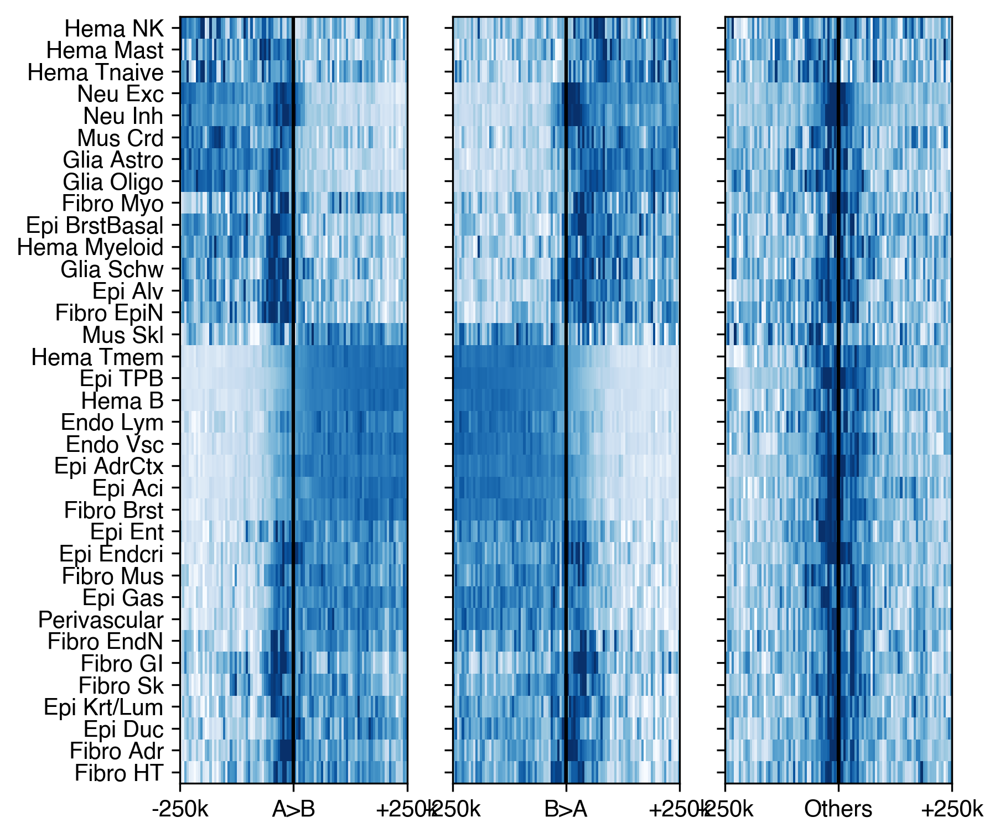
for ct in ['c2','c7','c1','c22','c10','c21','c30','c13']:
mcg_ct = mcg.loc[ct].groupby(bin_df['chrom'])
bound_data = {'ab':[], 'ba':[], 'other':[]}
for c,mcg_ct_chrom in mcg_ct:
idx = mcg_ct_chrom.index.str.split('_').str[1].astype(int) * 5000
for key in ['ab', 'ba', 'other']:
tmp = np.zeros((len(domain[ct][key][c]), 100))
for i,xx in enumerate(domain[ct][key][c]):
lbin = (idx >= (xx - 250000)) & (idx < xx)
rbin = (idx < (xx + 250000)) & (idx >= xx)
selb = lbin | rbin
mcg_tmp = mcg_ct_chrom[selb]
idxtmp = idx[selb]
tmp[i] = mcg_tmp.mean()
tmp[i, (idxtmp-xx)//5000 + 50] = mcg_tmp.values
bound_data[key].append(tmp)
for key in ['ab', 'ba', 'other']:
bound_data[key] = np.concatenate(bound_data[key], axis=0)
fig, axes = plt.subplots(1, 3, figsize=(9, 3), dpi=300)
# fig.suptitle(L1_annot[ct], fontsize=12)
for i,key in enumerate(['ab', 'ba', 'other']):
ax = axes[i]
data = bound_data[key].copy()
idx = np.argsort(data[:, :50].mean(axis=1) - data[:, 50:].mean(axis=1))
data = data[idx]
vmin, vmax = np.percentile(data, [10, 80])
data = (data - vmin) / (vmax - vmin)
ax.imshow(data, cmap='Blues_r', aspect='auto', rasterized=True, vmin=0, vmax=1)
ax.set_xticks([-0.5, 49.5, 99.5])
ax.set_yticks([])
ax.set_xticklabels(['-250k', ['A>B','B>A','Others'][i], '+250k'])
ax.set_ylabel(f'{data.shape[0]} Compartment Boundaries')
axes[1].set_title(L1_annot[ct])
fig.tight_layout()
fig.savefig(f'compartment/comp_boundary_flankmCG_{ct}.pdf', transparent=True)
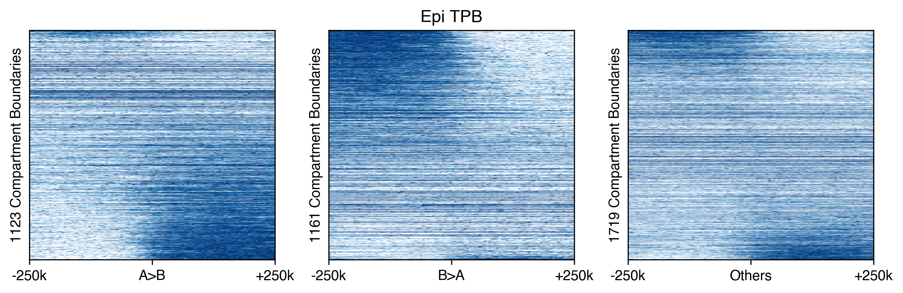
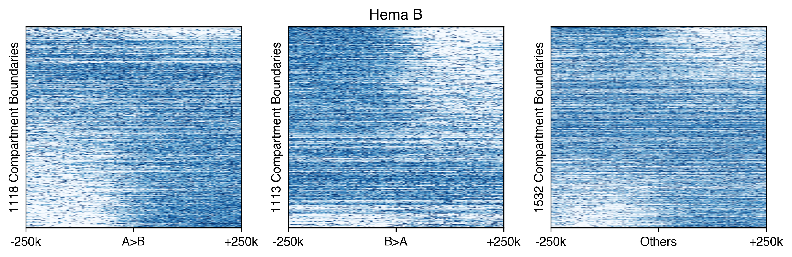
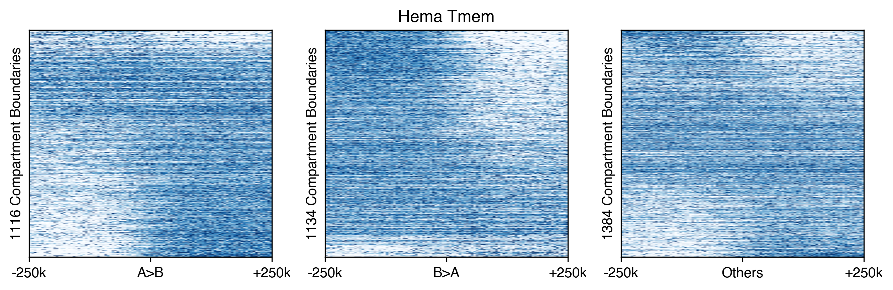
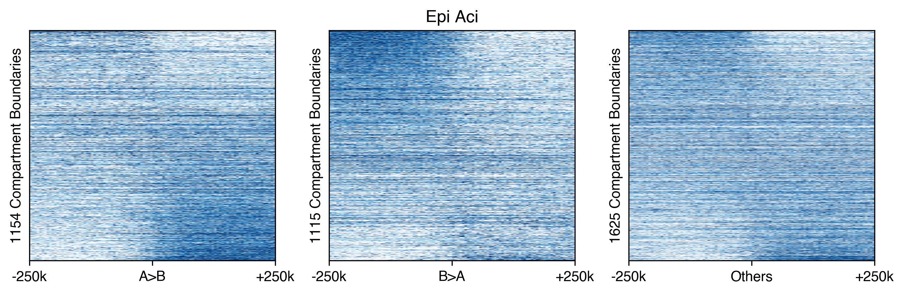
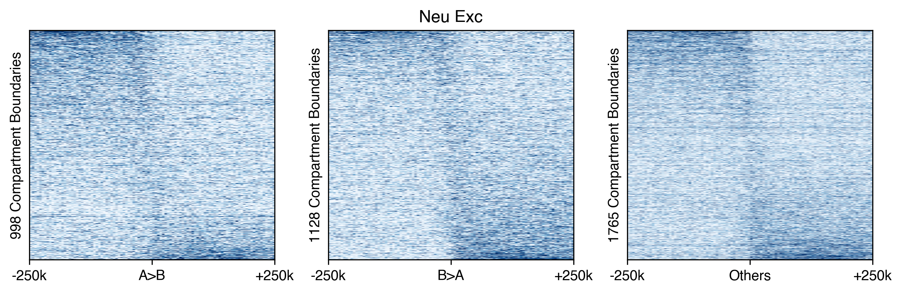
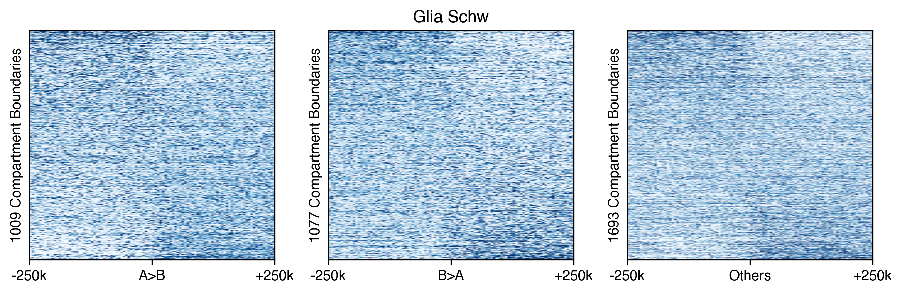
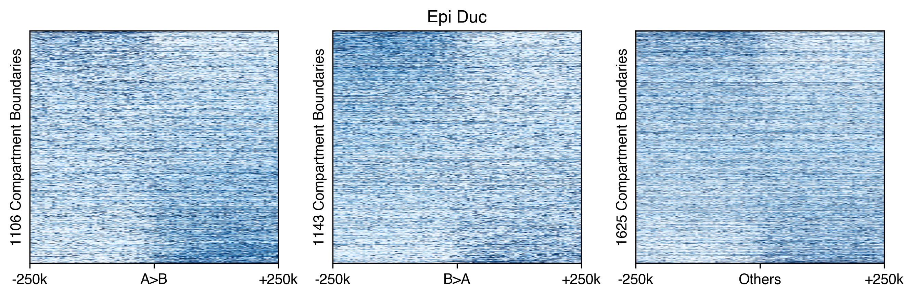
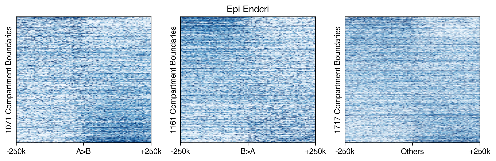
Get mCH level#
mcds = MCDS.open(f'{indir}merged_allc/subtype1k.mcds', var_dim='chrom1k')
mcds
bin_df = mcds[['chrom1k_chrom', 'chrom1k_start', 'chrom1k_end']].to_pandas()
bin_df['chrom5k'] = bin_df['chrom1k_chrom'].astype(str) + '_' + (bin_df['chrom1k_start'] // 5000).astype(str)
bin_df
mcds = mcds.assign_coords(L1=('cell', mcds.get_index('cell').str.split('-').str[0]))
mcds = mcds.groupby('L1').sum()
# mcds = mcds.assign_coords(chrom10k=('chrom1k', bin_df['chrom1k']))
mcds = mcds.sel({'mc_type':'CHN'})
mcds = MCDS(mcds, obs_dim='L1', var_dim='chrom1k')
mcds
exclude_chromosome = ['chrX', 'chrY', 'chrM', 'chrL']
mcds = mcds.remove_chromosome(exclude_chromosome)
cov = mcds['chrom1k_da'].sel(count_type='cov').mean(dim='L1').squeeze().to_pandas()
mcds = mcds.sel({'chrom1k':cov.index[cov>1000]})
black_list_path = '/large_experiments/zhoulab/ref/blacklist/hg38-blacklist.v2.bed.gz'
# --- robust black-list removal (inline replacement) ---
# MCDS.remove_black_list_region intersects with pybedtools and calls
# .to_dataframe().set_index(['chrom','start','end']). In pybedtools>=0.12 an
# EMPTY intersect returns a column-less DataFrame, so set_index raises
# KeyError("None of ['chrom','start','end'] ...") instead of the caught
# EmptyDataError. Reproduce the same result robustly by building the feature
# bed from the mcds bin coords and dropping bins overlapping the black list.
import pybedtools as _pbt
_feat = mcds.get_feature_bed(var_dim='chrom1k').reset_index()
_feat.columns = ['chrom1k', 'chrom', 'start', 'end']
_black = _pbt.BedTool.from_dataframe(
_feat[['chrom', 'start', 'end', 'chrom1k']]
).intersect(_pbt.BedTool(black_list_path), f=0.5, wa=True).to_dataframe()
if _black.shape[1] >= 4:
_drop = set(_black.iloc[:, 3].astype(str))
_keep = [b for b in mcds.get_index('chrom1k') if str(b) not in _drop]
mcds = mcds.sel({'chrom1k': _keep})
print(f'{len(_drop)} chrom1k features removed due to overlapping black list regions.')
else:
print('No feature overlapping the black list bed file.')
mc = mcds.sel({'count_type':'mc'})['chrom1k_da'].to_pandas()
cov = mcds.sel({'count_type':'cov'})['chrom1k_da'].to_pandas()
bin_df = bin_df.loc[mc.columns]
mc = mc.T.groupby(bin_df['chrom5k']).sum()
cov = cov.T.groupby(bin_df['chrom5k']).sum()
from ALLCools.mcds.utilities import calculate_posterior_mc_frac
mcg = calculate_posterior_mc_frac(mc.T.values, cov.T.values, normalize_per_cell=False)
mcg = pd.DataFrame(mcg, index=mc.columns, columns=mc.index)
mcg.to_hdf('mCH_distribution/L1_chrom5k_mCH.hdf', key='data')
mcg = pd.read_hdf('mCH_distribution/L1_chrom5k_mCH.hdf', key='data')
bin_df = pd.DataFrame(index=mcg.columns)
bin_df['chrom'] = bin_df.index.str.split('_').str[0]
bin_df['start'] = bin_df.index.str.split('_').str[1].astype(int) * 5000
bin_df
ave_data = {'ab':[], 'ba':[], 'other':[]}
for ct in L1_meta.index:
mcg_ct = mcg.loc[ct].groupby(bin_df['chrom'])
bound_data = {'ab':[], 'ba':[], 'other':[]}
for c,mcg_ct_chrom in mcg_ct:
idx = mcg_ct_chrom.index.str.split('_').str[1].astype(int) * 5000
for key in ['ab', 'ba', 'other']:
tmp = np.zeros((len(domain[ct][key][c]), 100))
for i,xx in enumerate(domain[ct][key][c]):
lbin = (idx >= (xx - 250000)) & (idx < xx)
rbin = (idx < (xx + 250000)) & (idx >= xx)
selb = lbin | rbin
mcg_tmp = mcg_ct_chrom[selb]
idxtmp = idx[selb]
tmp[i] = mcg_tmp.mean()
tmp[i, (idxtmp-xx)//5000 + 50] = mcg_tmp.values
bound_data[key].append(tmp)
for key in ['ab', 'ba', 'other']:
bound_data[key] = np.concatenate(bound_data[key], axis=0)
ave_data[key].append(bound_data[key].mean(axis=0))
print(ct)
# fig, axes = plt.subplots(1, 3, figsize=(9, 3), dpi=300)
# fig.suptitle(L1annot[ct], fontsize=12)
# for i,key in enumerate(['ab', 'ba', 'other']):
# ax = axes[i]
# data = bound_data[key].copy()
# idx = np.argsort(data[:, :50].mean(axis=1) - data[:, 50:].mean(axis=1))
# data = data[idx]
# vmin, vmax = np.percentile(data, [5, 98])
# ax.imshow(data, cmap='Greens_r', aspect='auto', vmin=vmin, vmax=vmax)
# ax.set_xticks([-0.5, 49.5, 99.5])
# ax.set_yticks([])
# ax.set_xticklabels(['-500k', ['A>B','B>A','Others'][i], '+500k'])
# ax.set_ylabel(f'{data.shape[0]} Compartment Boundaries')
joblib.dump(ave_data, 'domain/domain_impute_compbound_flankmch.joblib', compress=5)
ave_data = joblib.load('domain/domain_impute_compbound_flankmch.joblib')
data = pd.concat([pd.DataFrame(ave_data[key], index=L1_meta.index) for key in ['ab', 'ba', 'other']], axis=1)
rorder = cg.dendrogram_row.reordered_ind.copy()
from scipy.stats import zscore
fig, axes = plt.subplots(1, 3, figsize=(6, 6), dpi=300, sharey='all')
for i,key in enumerate(['ab','ba','other']):
ax = axes[i]
data = zscore(np.array(ave_data[key])[rorder], axis=1)
# vmin, vmax = np.percentile(data, [2, 98])
vmin, vmax = -2, 2
ax.imshow(data, cmap='Purples_r', aspect='auto', vmin=vmin, vmax=vmax)
ax.set_xticks([-0.5, 49.5, 99.5])
ax.set_xticklabels(['-250k', ['A>B','B>A','Others'][i], '+250k'])
ax.set_yticks(np.arange(data.shape[0]))
ax.set_yticklabels(L1_meta['L1_abbr'].values[rorder])
# ax.set_ylabel(f'{data.shape[0]} Compartment Boundaries')
ax.plot([49.5, 49.5], [-0.5, data.shape[0]-0.5], 'k')
# fig.tight_layout()
fig.savefig('compartment/comp_boundary_flankmCH.pdf', transparent=True)
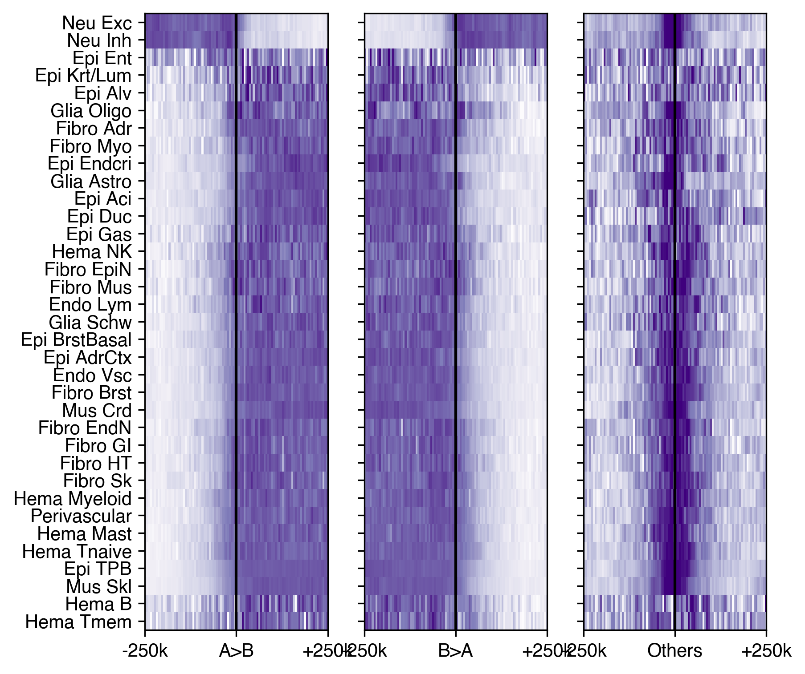
for ct in ['c2','c7','c1','c22','c10','c21','c30','c13']:
mcg_ct = mcg.loc[ct].groupby(bin_df['chrom'])
bound_data = {'ab':[], 'ba':[], 'other':[]}
for c,mcg_ct_chrom in mcg_ct:
idx = mcg_ct_chrom.index.str.split('_').str[1].astype(int) * 5000
for key in ['ab', 'ba', 'other']:
tmp = np.zeros((len(domain[ct][key][c]), 100))
for i,xx in enumerate(domain[ct][key][c]):
lbin = (idx >= (xx - 250000)) & (idx < xx)
rbin = (idx < (xx + 250000)) & (idx >= xx)
selb = lbin | rbin
mcg_tmp = mcg_ct_chrom[selb]
idxtmp = idx[selb]
tmp[i] = mcg_tmp.mean()
tmp[i, (idxtmp-xx)//5000 + 50] = mcg_tmp.values
bound_data[key].append(tmp)
for key in ['ab', 'ba', 'other']:
bound_data[key] = np.concatenate(bound_data[key], axis=0)
fig, axes = plt.subplots(1, 3, figsize=(9, 3), dpi=300)
# fig.suptitle(L1_annot[ct], fontsize=12)
for i,key in enumerate(['ab', 'ba', 'other']):
ax = axes[i]
data = bound_data[key].copy()
idx = np.argsort(data[:, :50].mean(axis=1) - data[:, 50:].mean(axis=1))
data = data[idx]
vmin, vmax = np.percentile(data, [10, 80])
# print(vmin, vmax)
data = (data - vmin) / (vmax - vmin)
ax.imshow(data, cmap='Purples_r', aspect='auto', rasterized=True, vmin=0, vmax=1)
ax.set_xticks([-0.5, 49.5, 99.5])
ax.set_yticks([])
ax.set_xticklabels(['-250k', ['A>B','B>A','Others'][i], '+250k'])
ax.set_ylabel(f'{data.shape[0]} Compartment Boundaries')
axes[1].set_title(L1_annot[ct])
fig.tight_layout()
fig.savefig(f'compartment/comp_boundary_flankmCH_{ct}.pdf', transparent=True)
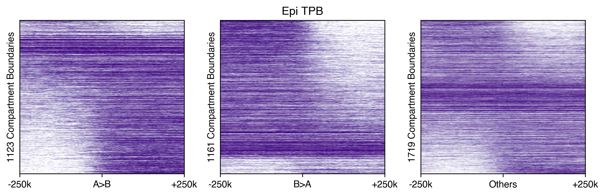
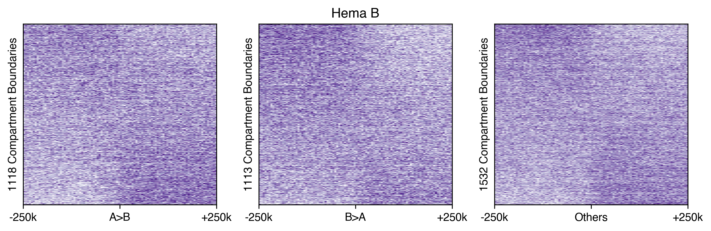
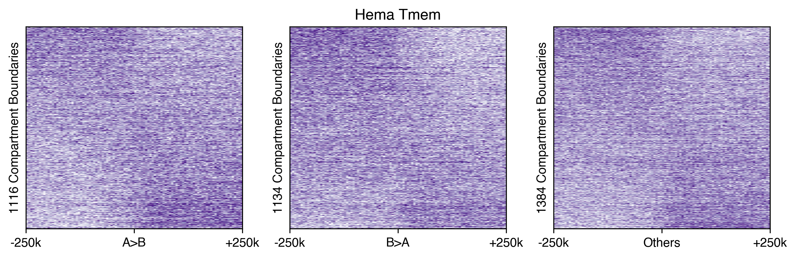
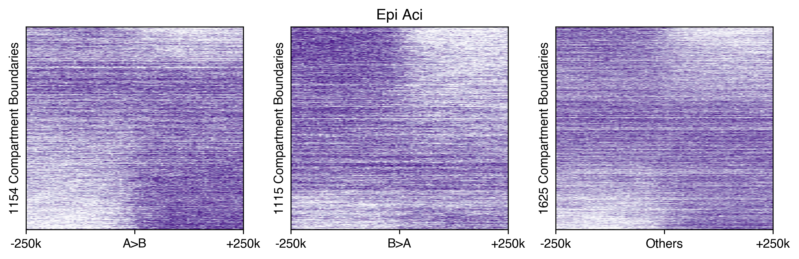
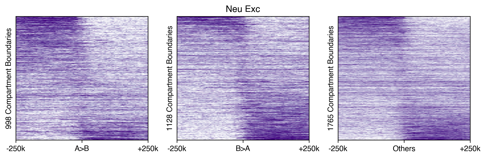
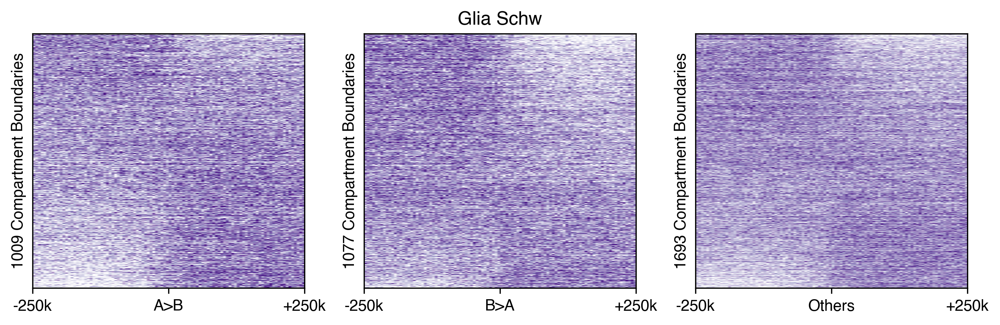
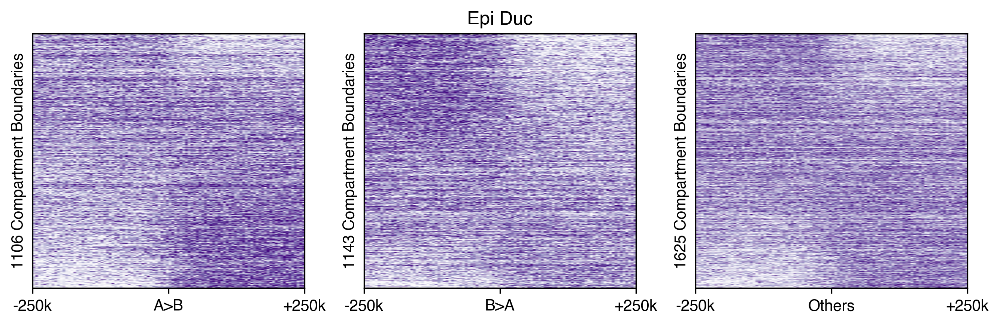
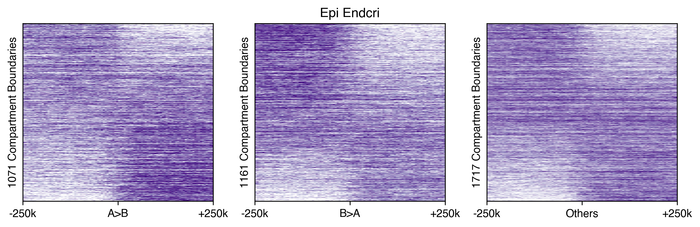